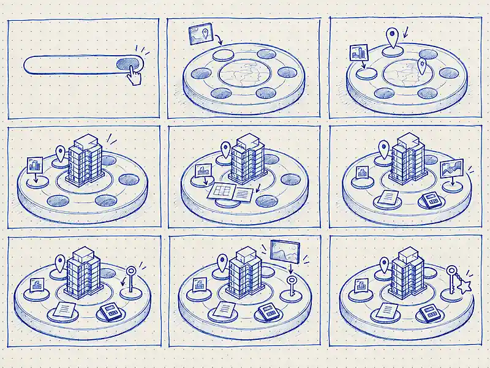

Северный квартал
От выбора квартиры до получения ключей — история покупки новостройки, рассказанная через 3D-анимацию
Создать 3D-историю
Разработать композицию и анимацию для ЖК «Северный квартал», используя архитектуру и символы покупки недвижимости.
From Click to Key
Курсор становится главным героем: он последовательно активирует этапы сделки — выбор локации, жилого комплекса и планировки, оформление документов, оплату и получение ключа.
Изометрическая камера и круговая композиция объединяют все действия вокруг главного объекта — дома.

Палитра северного сияния
Тёмно-синий фон, холодный голубой и зелёный акцент формируют визуальную систему. Градиентные переливы появляются на интерфейсных экранах и возвращаются в финальной звезде.
От дома до звезды
Когда покупатель получает ключ, в окнах квартиры загорается свет. Финальная звезда-брелок завершает историю и отсылает к северной символике проекта.